Primary
Primary education
- English
- Mathematics
- Integrated science
- Social studies
- Zambian language (Bemba)
- Creative and Technology studies
- Home economics
- Expressive Art
اقرأ · Nursery, Primary & Secondary · Twapia, Ndola
Iqra Islamic School is a private community school in Twapia, along the Ndola–Kitwe dual carriageway, about 3.5 km from Town Centre. Pupils follow the Zambian syllabus, with Islamic Religious Education and Arabic.
About us
Iqra Islamic School is a privately run community school in Zambia’s Copperbelt Province, in Twapia Township, Ndola, along the Ndola–Kitwe dual carriageway. The Twapia catchment is about 3.5 km from the Town Centre.
The school follows the recommended Zambian syllabus, with Islamic Religious Education (IRE) and Arabic included, across nursery, primary and secondary levels.
Members of the public are welcome to enrol their children, provided they can meet the school fees set by management and accept the school rules. The school also supports orphans and vulnerable children with free education.
It is associated with Masjid Noor Twapia Muslim Association.
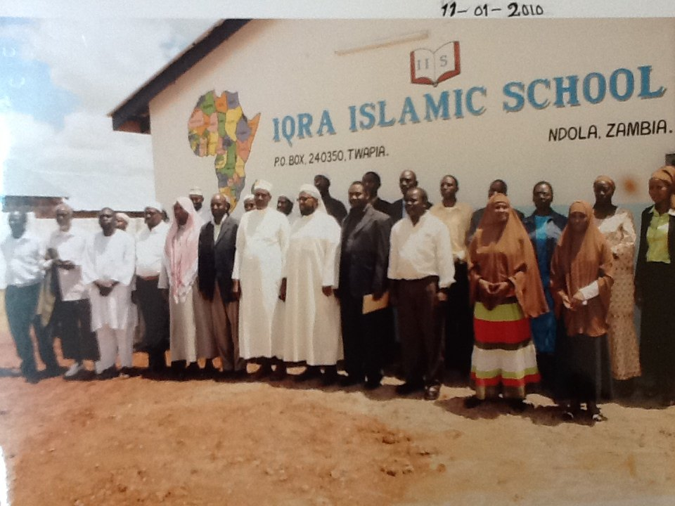
The school wall at Iqra Islamic School, Twapia. Photo from the school’s Blogspot.
Mission, vision and motto
The school provides quality inclusive and relevant education to all learners. It also endeavours to sensitise the community and all stakeholders on government and board initiatives and promote mutual understanding amongst all, with a vision of achieving a high pass percentage of its pupils.
To offer qualitative education and achieve a high pass percentage of the learners.
Quality Education and conduct for a better future.
Open to the public who accept the school rules, with support for orphans and vulnerable children.
The Zambian curriculum, together with Islamic Religious Education and Arabic.
The school reports a 100% Grade 7 pass rate each year pupils have sat the exams, and describes Grade 9 results as very impressive.
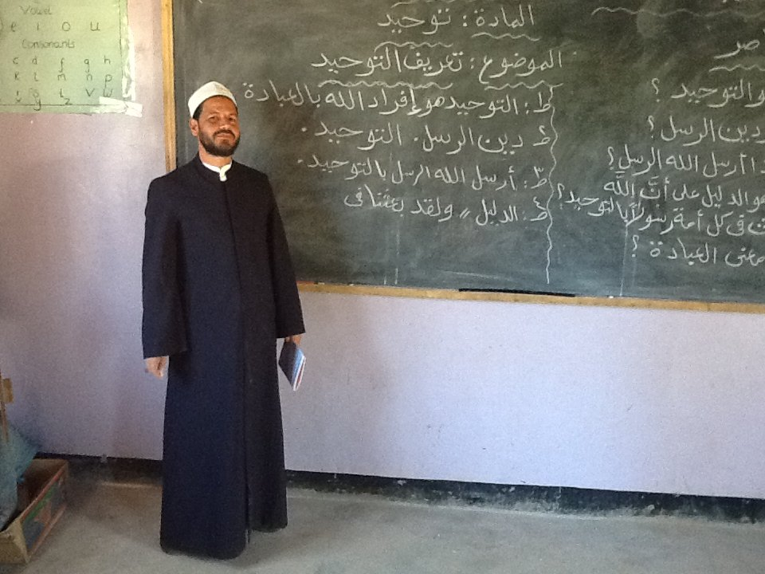
An Islamic Religious Education lesson. Photo from the school’s Blogspot.
Our history
The idea of an Islamic school in Ndola was, in the school’s words, a long-held dream for a community that had not had such a school. That dream became a reality when Iqra Islamic School was officially opened on 11 January 2010 by the District Education Board Secretary for Ndola.
Among the officials invited were the area councillor Mr Muyunda, RDC Chairman Mr William Sasokoki, Sheikh Mohamed Idris, Sheikh Saddique Kaputula, Mufti of the Islamic Supreme Council of the Republic of Zambia, and Mr Abdi Abshir, chairman of the Somali community, together with many other guests.
The school is financed mainly by school fees and by donations from well-wishers, which help to pay staff and other running costs.
What pupils study
Pupils study the Zambian syllabus. The lists below are taken from the school’s Blogspot. Islamic Religious Education and Arabic are taught alongside these subjects.
Primary
Junior secondary
Senior secondary
Compulsory subjects:
Optional subjects:
The school’s Blogspot states that it holds Examinations Council of Zambia (ECZ) centre code 050485 for Grade 7, and that it had applied to the Ministry of Education for Grade 9 and Grade 12 centre registration. That information has not been reconfirmed for this demo.
Facilities & resources
The school lists fourteen classrooms, a staff room, computer lab, science lab, tuck shop, mosque, kitchen, sick room, ablution blocks, and volleyball, football and basketball courts. The photographs below are from the school’s own Blogspot.
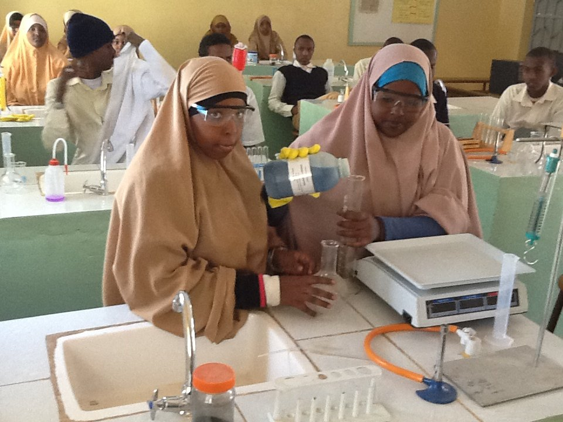
A science laboratory for practical work, also marked on the Science Laboratory Block-1 building.
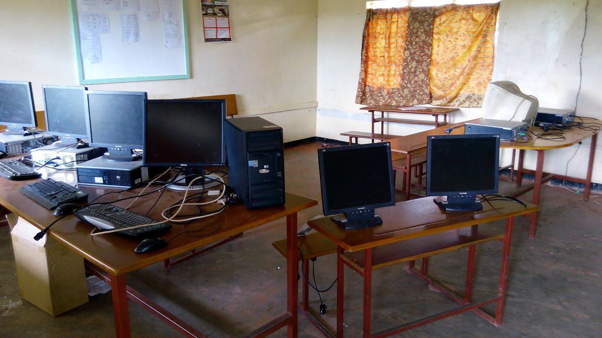
A computer laboratory supporting computer studies and digital skills.
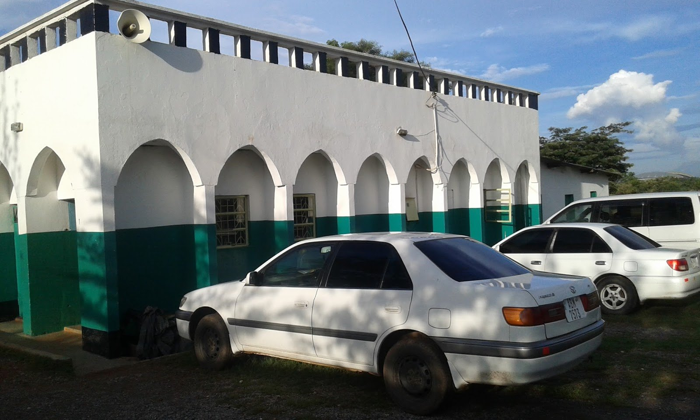
A mosque on the school premises, for prayer and Islamic education.
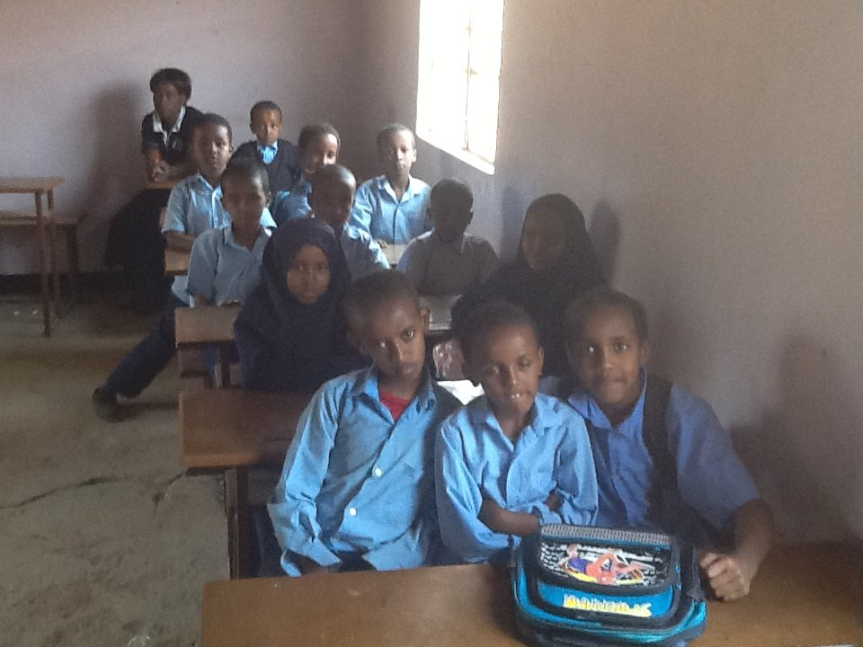
Fourteen classrooms, with nursery, primary and secondary classes.
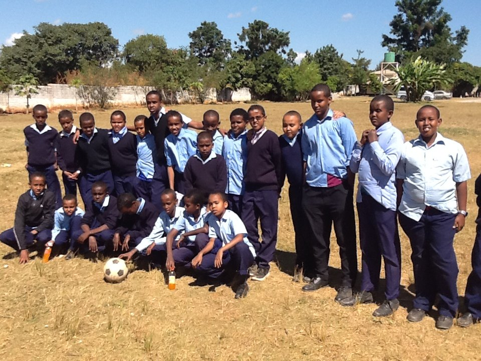
A playground with volleyball, football and basketball courts.
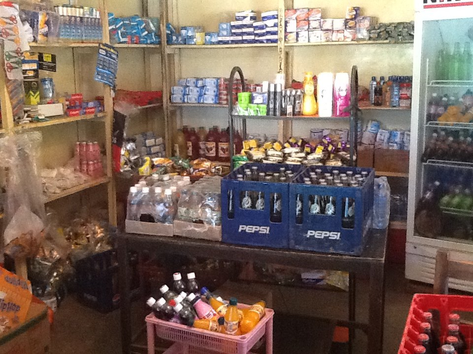
A tuck shop on the campus, as shown in the school’s own photographs.
A sick room is listed among the school’s facilities. No public photograph of it was available to show here.
A school kitchen is listed on the Blogspot, alongside the tuck shop and staff room.
Separate ablution blocks for boys and girls, plus staff toilets, are listed among the premises.
What we offer
Alongside the Zambian syllabus, the school provides transport, supports vulnerable learners, and welcomes families from the wider community.
The school’s Blogspot says it has three buses for carrying learners to and from school, and an eight-seater bus for staff.
The school admits and supports orphans and vulnerable children, giving them free education.
Islamic Religious Education and Arabic are taught together with the recommended Zambian syllabus.
Members of the public may enrol their children, provided they meet the school fees and accept the school rules.
The school describes its personnel as highly qualified in their fields, with experienced departmental heads.
The school reports very good results, including a 100% Grade 7 pass rate each year, and holds ECZ centre code 050485 for Grade 7.
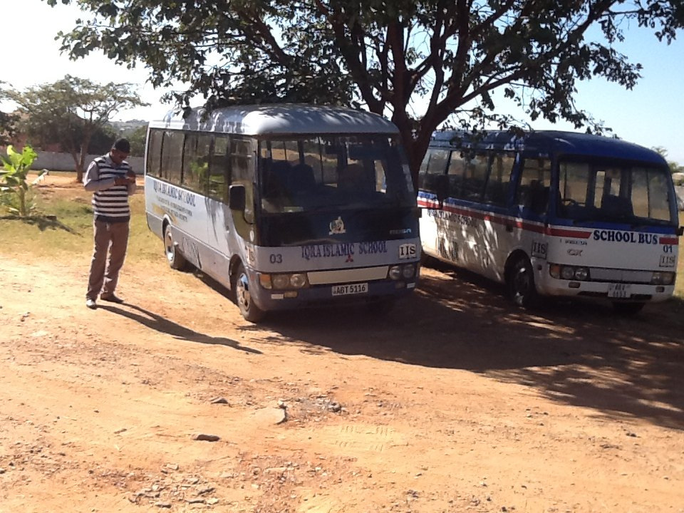
School buses at Iqra Islamic School. Photo from the school’s Blogspot.
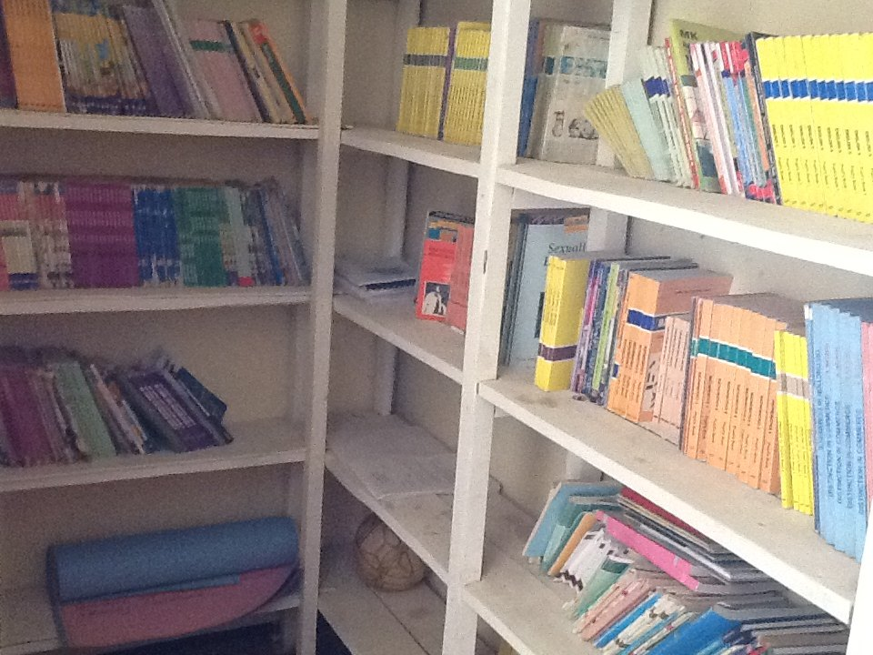
School bookshelves. Photo from the school’s Blogspot.
Our people
Names and roles below are taken from the school’s Blogspot contact page. They may need updating. No staff portraits were labelled on that page, so initials are shown instead.
Board Chairperson
Principal
Head Teacher
Deputy Head
Accountant
Transport Officer
Secretary
Senior Teacher, Upper Level
Senior Teacher, Lower Level
For parents
These items are sample notices, written for this demo, so you can see how a live parent board would look. They are not real school dates or events.
A live site could publish confirmed opening and closing dates for each term, exam weeks and mid-term breaks, so families can plan ahead.
Parents would see the confirmed dates the school will close for Eid, and when classes resume. This card is only an example of that layout.
A short notice could list the agenda, venue and time, with a reminder sent by WhatsApp the day before.
From the school’s Blogspot
Photographs published on the school’s Blogspot pictures page, so families can see the campus as the school itself has shown it.
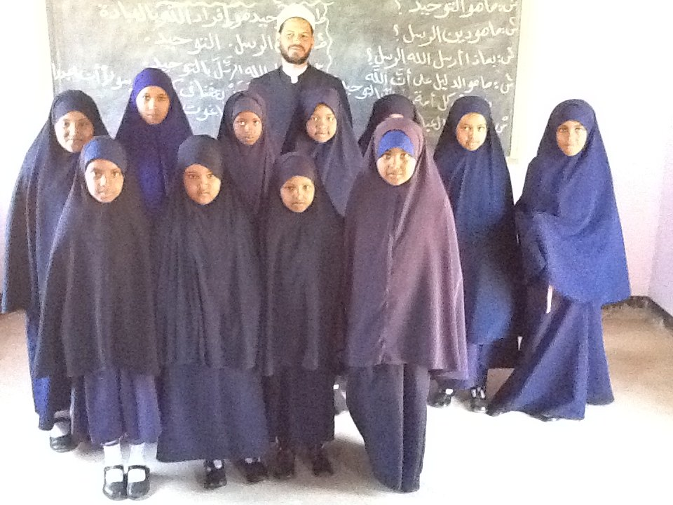
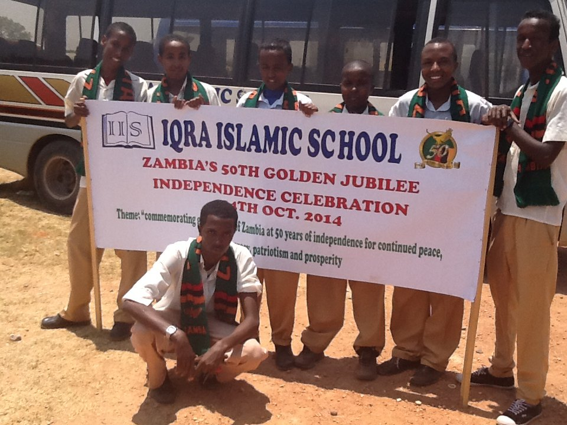
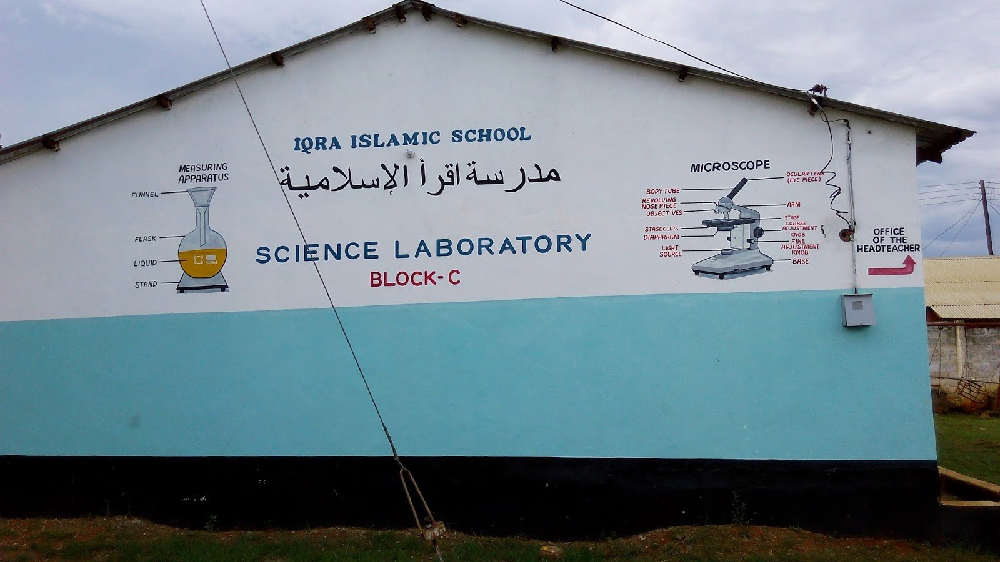
Get in touch
Visit the school in Twapia, call, or start an application. The school email below is taken from the Blogspot contact page.
Open in Google Maps · coordinates from the PDU Navigator listing for the school in Twapia.